Kernelcon-2019 CTF writeups
Kernelcon 2020 is a litle less then 5 months away and my newest challenges are well into their development life cycle. However this post is not about 2020; Instead I will be taking you, the reader, through the CTF writeups for the ctf's I developed for 2019!
Setting Up for the CTF's
Getting the Challenges
All of these challenges were built to run on a Debian build Linux distro!. From a Linux terminal, run the following commands to pull down the repository!
Qu3b411@host:~/$ mkdir kernelcon-2019-ctf-qu3b411
Qu3b411@host:~/$ cd kernelcon-2019-ctf-qu3b411
Qu3b411@host:~/kernelcon-2019-ctf-qu3b411$ git init
Initialized empty Git repository in /home/Qu3b411/kernelcon-2019-ctf-qu3b411/.git/
Qu3b411@host:~/kernelcon-2019-ctf-qu3b411$ git clone https://github.com/qu3b411/kernelcon-CTF-2019-solutions
Cloning into 'kernelcon-CTF-2019-solutions'...
remote: Enumerating objects: 51, done.
remote: Counting objects: 100% (51/51), done.
remote: Compressing objects: 100% (49/49), done.
remote: Total 51 (delta 5), reused 43 (delta 1), pack-reused 0
Unpacking objects: 100% (51/51), done.
Qu3b411@host:~/kernelcon-2019-ctf-qu3b411$ cd kernelcon-CTF-2019-solution
Qu3b411@host:~/kernelcon-2019-ctf-qu3b411/kernelcon-CTF-2019-solutions$ ls -l
total 24
drwxrwxr-x 4 qu3b411 qu3b411 4096 Oct 30 11:09 ah-ah-ah,-You-didnt-say-the-magic-word
drwxrwxr-x 4 qu3b411 qu3b411 4096 Oct 30 11:09 I-did-a-test-run-on-this-thing-it-took-me-twenty-minutes
-rw-rw-r-- 1 qu3b411 qu3b411 1068 Oct 30 11:09 LICENSE
-rw-rw-r-- 1 qu3b411 qu3b411 348 Oct 30 11:09 README.md
drwxrwxr-x 4 qu3b411 qu3b411 4096 Oct 30 11:09 we-used-the-complete-DNA-of-a-frog-to-fill-in-the-holes-and-complete-the-code
drwxrwxr-x 2 host host 4096 Oct 30 11:09 'you-did-it-you-crazy-son-of-a-****-you-did-it'
Qu3b411@host:~/kernelcon-2019-ctf-qu3b411/kernelcon-CTF-2019-solutions$ Now you have all of CTF's that I wrote for kernelcon. Next you will need to get Ida-pro free.
Installing IDA
install IDA-PRO 7.0 freeware onto your Linux machine!
Qu3b411@host:~/kernelcon-2019-ctf-qu3b411/kernelcon-CTF-2019-solutions$ pushd ~/Downloads
~/Downloads ~/kernelcon-2019-ctf-qu3b411/kernelcon-CTF-2019-solutions$
Qu3b411@host:~/Downloads$ wget https://out7.hex-rays.com/files/idafree70_linux.run
--2019-10-30 11:44:04-- https://out7.hex-rays.com/files/idafree70_linux.run
Resolving out7.hex-rays.com (out7.hex-rays.com)... 85.17.87.13
Connecting to out7.hex-rays.com (out7.hex-rays.com)|85.17.87.13|:443... connected.
HTTP request sent, awaiting response... 200 OK
Length: 47645071 (45M)
Saving to: ‘idafree70_linux.run.2’
idafree70_linux.run.2 5%[==> ] 2.32M 71.9KB/s eta 9m 43s ^Let the download take place! Once complete your going to want to run the installer and follow the prompt leaving the default installation location as is!
Qu3b411@host:~/Downloads$ chmod +x ./idafree70.linux.run
Qu3b411@host:~/Downloads$ ./idafree70_linux.run --mode text
----------------------------------------------------------------------------
Welcome to the IDA Free Setup Wizard.
----------------------------------------------------------------------------
Please read the following License Agreement. You must accept the terms of this
agreement before continuing with the installation.
Press [Enter] to continue:
IDA Pro Freeware 7.0
This free version of IDA Pro is licensed to you for non-commercial
use (at home for personal purposes). Commercial use requires a normal
IDA Pro license. This license restriction supersedes other provisions
in the standard IDA Pro license below.
The IDA Pro computer programs, hereafter described as "the software"
are licensed, not sold, to you by Hex-Rays SA pursuant to the
terms and conditions of this Agreement. Hex-Rays SA reserves any
right not expressly granted to you. You own the media on which the
software is delivered but Hex-Rays SA retains ownership of all
copies of the software itself. The software is protected by copyright
law.
Each copy of the software can only be used by a single user at a time.
Each license permits the user to install the software on personal laptop
and home computer, provided that no other user uses the software on those
computers.
This license also allows you to make as many copies of the installation media
as you need for backup or installation purposes.
Press [Enter] to continue:
Restrictions
You may not distribute copies of the software to another party or
electronically transfer the software from one computer to another if
one computer belongs to another party.
You may not modify, adapt, translate, rent, lease, resell, distribute,
or create derivative works based upon the software or any part
thereof.
Limited Warranty and Disclaimers
The software is provided "as is" without warranty of any kind.
Hex-Rays SA expressly disclaims all implied warranties, included
but not limited to the implied warranties of merchantability and
fitness for a particular purpose. Hex-Rays SA does not guarantee
the software or any accompanying materials in terms of their
correctness, accuracy, reliability, or otherwise. The entire risk as
to the results and performance of the software and written materials
is assumed by you.
Complete Statement of Warranty
Press [Enter] to continue:
The limited warranty provided in preceding paragraphs are the only
warranties of any kind made by Hex-Rays SA on this product. No
oral or written information or advice given by Hex-Rays SA, its
dealers, distributors, agents or employees shall create a warranty or
in any way increase the scope of this warranty, and you may not rely
on any such information or advice. This warranty gives you specific
legal rights. You may have other rights, which vary from country to
country.
Limitation of Liability.
In no event will Hex-Rays SA or its employees be liable to you
for any consequential, incidental, or indirect damages arising out of
the use or the inability to use the software or accompanying written
material. This includes damages for loss of business profits, business
interruption and loss of business information. The liability of
Hex-Rays SA for actual damages for any cause whatsoever is
limited to the money paid for the software that caused the damages.
Termination
This license is effective until terminated. It will terminate
immediately without notice if you fail to comply with any of its
Press [Enter] to continue:
provisions. Upon termination you must destroy the software and all
copies thereof. You may terminate this license at any time by
destroying the software and all copies thereof.
Disputes
Disputes related to this agreement will be dealt with in the district court of
Liège, Belgium.
Press [Enter] to continue:
Do you accept this license? [y/n]: y
----------------------------------------------------------------------------
Please specify the directory where IDA Free will be installed.
Installation Directory [/home/host/idafree-7.0]:
----------------------------------------------------------------------------
Setup is now ready to begin installing IDA Free on your computer.
Do you want to continue? [Y/n]: y
----------------------------------------------------------------------------
Please wait while Setup installs IDA Free on your computer.
Installing
0% ______________ 50% ______________ 100%
#########################################
----------------------------------------------------------------------------
Setup has finished installing IDA Free on your computer.The Challenges
These challenges were themed after Jurassic Park and some of these challenges cannot be solved without understanding the refrences so keep that in mind! Now that you have the tools set up I would encourage you to actually attempt to solve the challenges yourself!,
Ah Ah Ah, You Didn't Say the magic Word!
For this challenge you must watch the video that was provided during the CTF, without it there is no way to solve the challenge!
In your Console do the following:
Qu3b411@host:~/Downloads$ pdpd; cd ./ah-ah-ah,-You-didnt-say-the-magic-word/challenge/
Qu3b411@host:~/kernelcon-2019-ctf-qu3b411/kernelcon-CTF-2019-solutions/ah-ah-ah,-You-didnt-say-the-magic-word/challenge$ls -l
total 40
-rw-rw-r-- 1 qu3b411 qu3b411 169 Oct 30 11:09 ReadMe.md
-rwxrwxr-x 1 qu3b411 qu3b411 17112 Oct 30 11:09 YouDidntSayTheMagicWord
Qu3b411@host:~/kernelcon-2019-ctf-qu3b411/kernelcon-CTF-2019-solutions/ah-ah-ah,-You-didnt-say-the-magic-word/challenge$./YouDidntSayTheMagicWord
Jurassic Park, System Security Interface
Version 4.0.5, Alpha E
Ready...
> Notice the Simularity between the video and the provided interface. This was Intentional. When you run this, you must copy the input from the video.
Jurassic Park, System Security Interface
Version 4.0.5, Alpha E
Ready...
> access security
access: PERMISSION DENIED.
> access security grid
access: PERMISSION DENIED.
> access main security grid
access: PERMISSION DENIED....and...
YOU DIDN'T CHANGE THE MAGIC PARAMATER!
YOU DIDN'T CHANGE THE MAGIC PARAMATER!
YOU DIDN'T CHANGE THE MAGIC PARAMATER!
YOU DIDN'T CHANGE THE MAGIC PARAMATER!
YOU DIDN'T CHANGE THE MAGIC PARAMATER!
YOU DIDN'T CHANGE THE MAGIC PARAMATER!
YOU DIDN'T CHANGE THE MAGIC PARAMATER!
YOU DIDN'T CHANGE THE MAGIC PARAMATER!
^CHit ctrl+C to stop the loop from printing the warning message. Obviously we are going to have to change a function paramater. This means its time to start reversing the binary! Run IDA against the binary!
Qu3b411@host:~/kernelcon-2019-ctf-qu3b411/kernelcon-CTF-2019-solutions/ah-ah-ah,-You-didnt-say-the-magic-word/challenge$~/idafree-7.0/ida64 ./YouDidntSayTheMagicWordWhen presented with the following popup window select ok.
Then you will get the following options. Leave them in their default configuration and select ok.
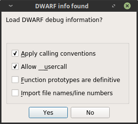
By default, you should be presented with the Control Flow Diagram as such:
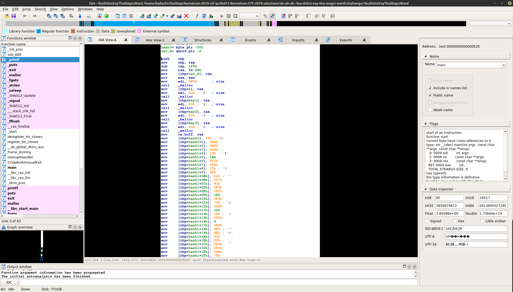
Locate the function call to CruleAndUnusualExit.
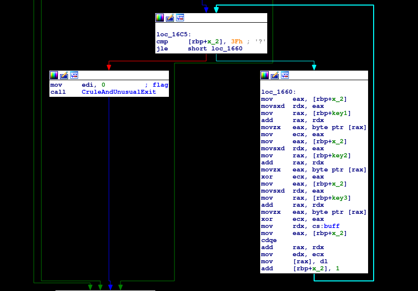
put your cursor over the mov edi,0 instruction and click, a cursor will appear where clicked! then go to'edit>Patch program>Assemble...
A small window will appear letting you edit the program, change the Instruction Field from mov edi, 0 to mov edi, 1 and click ok!
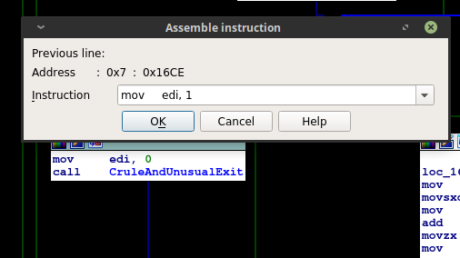
now click Cancel.
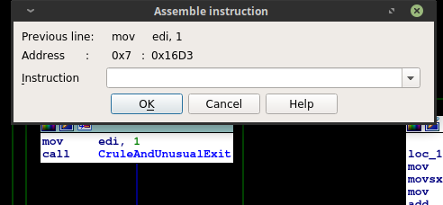
Apply the patch to the input file by navigating to Edit>Patch program>Apply patches to input file....
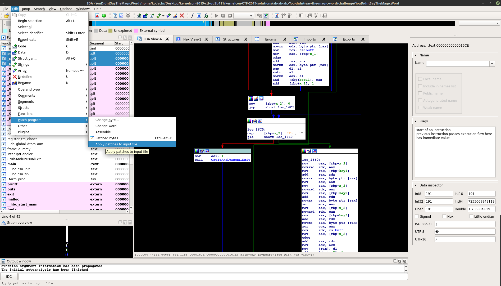
When presented with the following screen click ok!
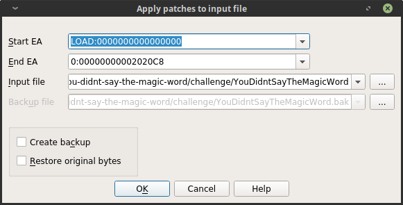
Navigate back to your Console window and hit CTRL+c and ida will close leaving you in the terminal! then execute the following command to get the Kernel!
Qu3b411@host:~/kernelcon-2019-ctf-qu3b411/kernelcon-CTF-2019-solutions/ah-ah-ah,-You-didnt-say-the-magic-word/challenge$ ./YouDidntSayTheMagicWord
Jurassic Park, System Security Interface
Version 4.0.5, Alpha E
Ready...
> access security
access: PERMISSION DENIED.
> access security grid
access: PERMISSION DENIED.
> access main security grid
kernel{74f2880d7deff82f118d2a412dc360c5}Congratulations the flag is kernel{74f2880d7deff82f118d2a412dc360c5}.
We used the complete DNA of a frog to fill in the holes and complete the code.
Issue the following command in your console window to navigate to this challenge directory.
Qu3b411@host:~/kernelcon-2019-ctf-qu3b411/kernelcon-CTF-2019-solutions/ah-ah-ah,-You-didnt-say-the-magic-word/challenge$ cd ../../we-used-the-complete-DNA-of-a-frog-to-fill-in-the-holes-and-complete-the-code/challenge/
Qu3b411@host:~/kernelcon-2019-ctf-qu3b411/kernelcon-CTF-2019-solutions/we-used-the-complete-DNA-of-a-frog-to-fill-in-the-holes-and-complete-the-code/challenge$ ls -l
total 28
-rwxrwxr-x 1 qu3b411 qu3b411 22936 Oct 30 11:09 DNASequence
-rw-rw-r-- 1 qu3b411 qu3b411 820 Oct 30 11:09 ReadMe.md
Qu3b411@host:~/kernelcon-2019-ctf-qu3b411/kernelcon-CTF-2019-solutions/we-used-the-complete-DNA-of-a-frog-to-fill-in-the-holes-and-complete-the-code/challenge$ ./DNASequence
You did not correct the dna strand, your baby dino is a mutated freek of nature.Their is no input, so lets start disassembling the code and see whats happening,
Qu3b411@host:~/kernelcon-2019-ctf-qu3b411/kernelcon-CTF-2019-solutions/we-used-the-complete-DNA-of-a-frog-to-fill-in-the-holes-and-complete-the-code/challenge$ ~/idafree-7.0/ida64 ./DNASequence When presented with the following screen you dont have to change any settings, just click ok to continue loading the file.
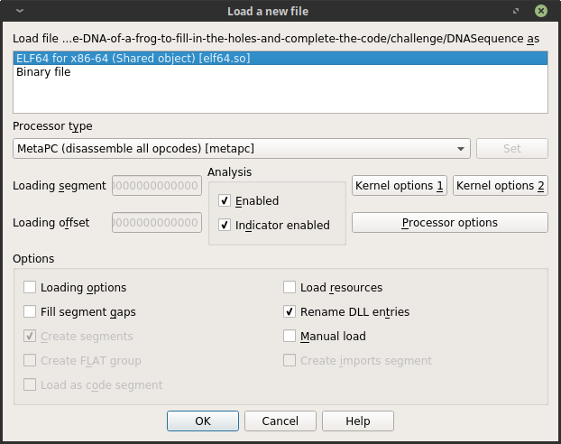
in the function list you will notice several 3 letter combinations. these functions return a numerical representation of that string! you will also notice HoleInDNA,DinoDnaSeq,andFrogDnaSeq.
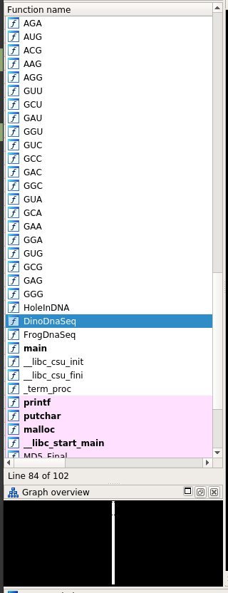
By this point the problem should be clear to you based on the name of this Challenge "We used the complete DNA of a frog to fill in the holes and complete the code"! Its not my style to give red herrings and bad clues... I like a challenge that forces one to tackle the problem in a straight out technical manner. Lets take a look inside of the DinoDnaSeq and the FrogDnaSeq and see what's going on!
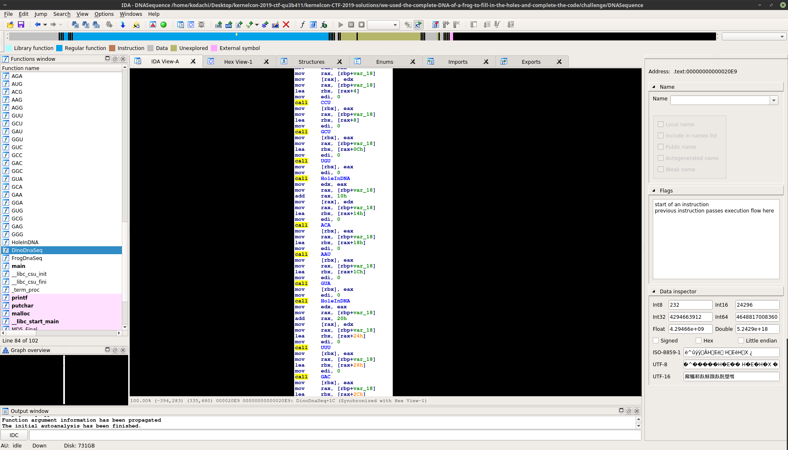
all throughout the DinoDnaSeq we see calls to HoleInDNA; these calls, as you may have noticed, adversly effect the control flow of the Assembly. You can't just change the function call. It just wont work the way you want it to.
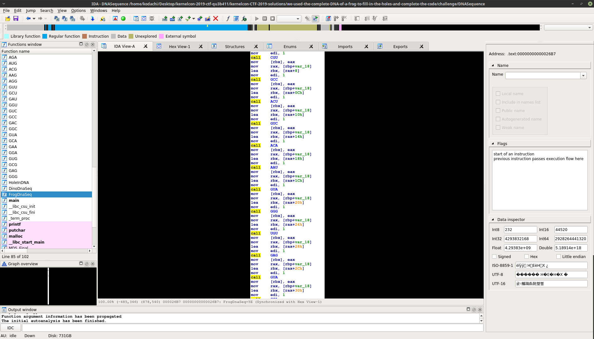
However if you look at the FrogDnaSeq you may notice a nice clean control flow that would be a lot easier to manipulate, for this solution that's exactly what I'm going to do, but first we have to construct a table to track the function calls. That table might look something like this!
| Dino start | Frog | Dino Fix | ARG | |
|---|---|---|---|---|
| GUC | UAC | GUC | 0 | |
| CCU | CGU | CCU | 0 | |
| GCU | GCC | GCU | 0 | |
| UGU | ACU | UGU | 0 | |
| HoleInDNA | GUC | GUC | 1 | |
| ACA | ACA | ACA | 0 | |
| AAU | AAU | AAU | 0 | |
| GUA | GUA | GUA | 0 | |
| HoleInDNA | GGG | GGG | 1 | |
| UUU | UGU | UUU | 0 | |
| GAC | GAG | GAC | 0 | |
| CGU | GUA | CGU | 0 | |
| GCC | GCA | GCC | 0 | |
| ACU | AGU | ACU | 0 | |
| GUA | CCA | GUA | 0 | |
| AAA | GAA | AAA | 0 | |
| CGG | CGC | CGG | 0 | |
| GCU | UUU | GCU | 0 | |
| UCC | CUC | UCC | 0 | |
| CGC | CGU | CGC | 0 | |
| HoleInDNA | AGC | AGC | 1 | |
| ACG | UGC | ACG | 0 | |
| AGG | GCA | AGG | 0 | |
| CUA | UAU | CUA | 0 | |
| CAC | GCA | CAC | 0 | |
| GGG | AGA | GGG | 0 | |
| CAU | AAA | CAU | 0 | |
| HoleInDNA | CUA | CUA | 1 | |
| UCU | ACA | UCU | 0 | |
| CAU | AGC | CAU | 0 | |
| GUG | UGA | GUG | 0 | |
| UGA | GCU | UGA | 0 | |
| GCA | CUC | GCA | 0 | |
| CCC | CGA | CCC | 0 | |
| HoleInDNA | AGC | AGC | 1 | |
| UCC | UUG | UCC | 0 | |
| UUC | GUC | UUC | 0 | |
| AGG | CGU | AGG | 0 | |
| AUU | AAA | AUU | 0 | |
| GUC | GGC | GUC | 0 | |
| ACG | CCA | ACG | 0 | |
| HoleInDNA | CUU | CUU | 1 | |
| GCA | ACA | GCA | 0 | |
| CGC | CAA | CGC | 0 | |
| UCU | UUC | UCU | 0 | |
| UAC | GUG | UAC | 0 | |
| GGA | GCA | GGA | 0 | |
| AUA | AGA | AUA | 0 | |
| CGA | AAG | CGA | 0 | |
| GUC | UCG | GUC | 0 | |
| ACG | GCU | ACG | 0 | |
| CCC | GCC | CCC | 0 | |
| CGU | UCG | CGU | 0 | |
| ACC | UAA | ACC | 0 | |
| ACG | AUU | ACG | 0 | |
| HoleInDNA | GUA | GUA | 1 | |
| ACC | CCG | ACC | 0 | |
| GUG | CAC | GUG | 0 | |
| CUC | GUG | CUC | 0 | |
| AGU | GGU | AGU | 0 | |
| UCC | CAC | UCC | 0 | |
| HoleInDNA | GCA | GCA | 1 | |
| GGA | AUG | GGA | 0 | |
| UGC | CCU | UGC | 0 |
Which means it's time to start patching the program up; First let's patch up the main program to call the correct function. For this solution we will actually be calling FrogDnaSeq. You must find the call to DinoDnaSeq, once located,highlight it and select Edit>Patch program>Assemble....
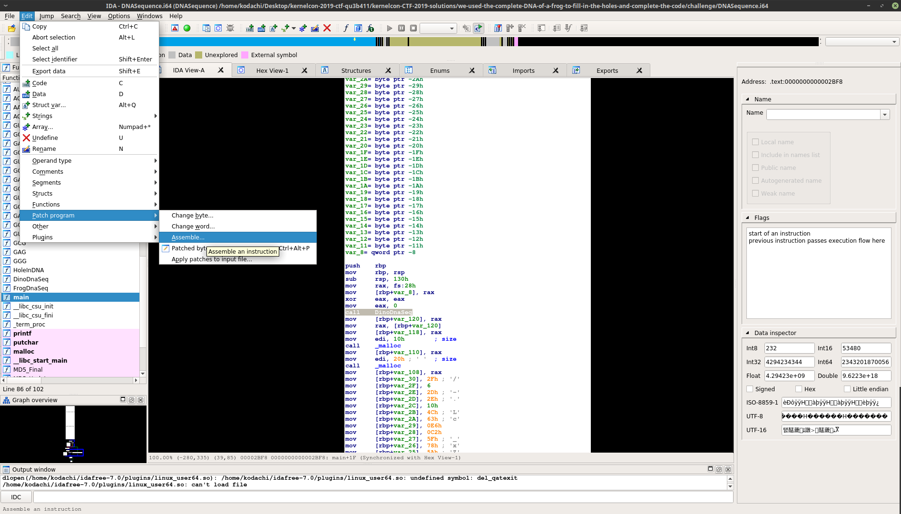
The following window appears, you can then edit the function call, call DinoDnaSeq should be changed to call FrogDnaSeq
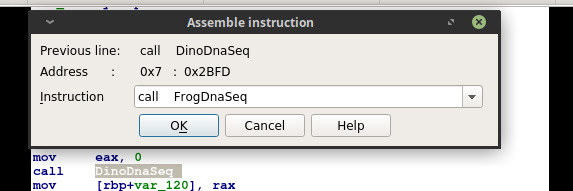
It's now time to start editing the FrogDnaSeq function. To do this traverse the table and edit the function calls in FrogDnaSeq to their respective values, as dictated by the table we constructed previously. Keep in mind it is important to change the function paramaters to correspond to where the DNA was inherited from!
The register used to pass the paramater to the function call is edi ,the value being passed to the function will always occur immediatly before the call itself!
Let's walk through the first function call together. Start by highlighting mov edi, 0 and selecting Edit>Patch program> Assemble
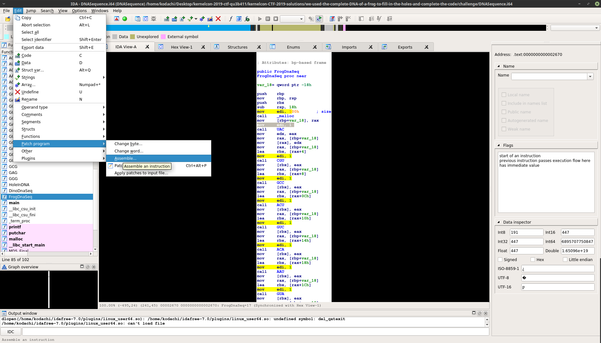
Modify the instruction from mov edi,1 to mov edi,0 and select ok
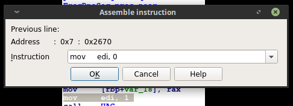
Next modify the function call itself, Start by highlighting call UAC and then select Edit>Patch program>Assemble...
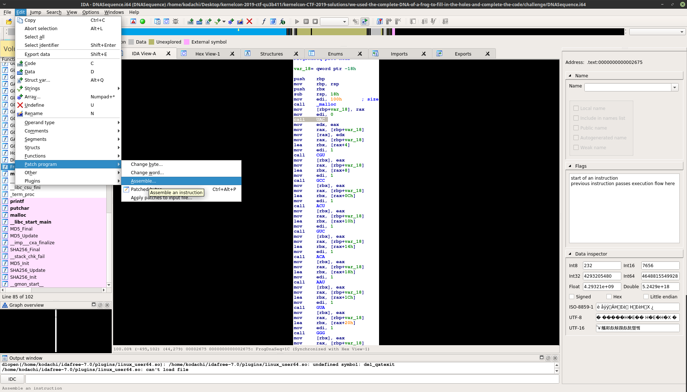
In the Instructions Field modify call UAC to call GUC and press OK
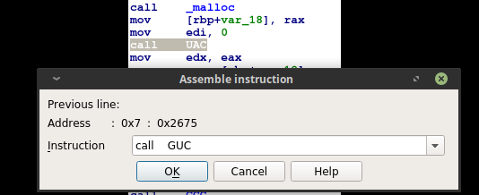
Hit Cancel on the proceeding screen, then repeat these steps modifying each function call to the corresponding value on the provided table. Remember that calls to HoleInDNA are voids that can be ignored, skip over that function call and move to the next... Do not modify the paramater being passed to HoleInDna.
Once you have applied the patches to the binary go to Edit>Patch program>Apply patches to input
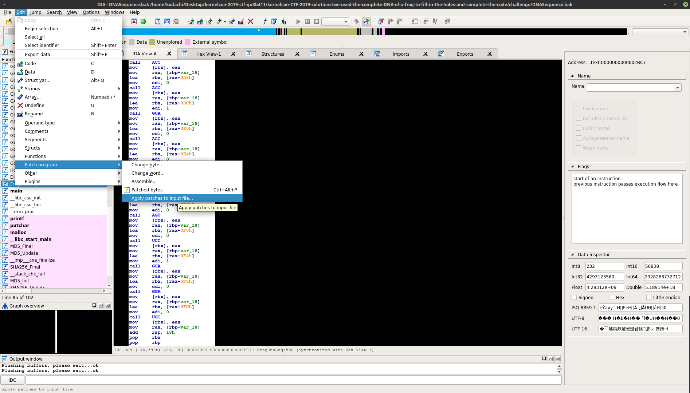
the following window will appear, click ok.
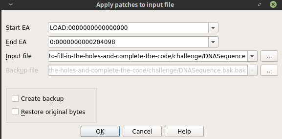
Navigate back to your console and hit CTRL+c to terminate ida, then run the modified binary
Qu3b411@host:~/kernelcon-2019-ctf-qu3b411/kernelcon-CTF-2019-solutions/we-used-the-complete-DNA-of-a-frog-to-fill-in-the-holes-and-complete-the-code/challenge$ ./DNASequence
Kernel{64bdfb39f4d8e2624c8ee42604c0150e}Congratulations, You now have the Second ctf flag!
I did a test run on this thing it took me twenty minutes
This is the last one to be solved during KernelCon, This is a Misc challenge that does not require any reverse engineering. instead one must execute a timing attack against the password input, so lets get started!
in your console window execute the following commands
Qu3b411@host:~/kernelcon-2019-ctf-qu3b411/kernelcon-CTF-2019-solutions/we-used-the-complete-DNA-of-a-frog-to-fill-in-the-holes-and-complete-the-code/challenge$ cd ../../I-did-a-test-run-on-this-thing-it-took-me-twenty-minutes/challange
Qu3b411@host:~/kernelcon-2019-ctf-qu3b411/kernelcon-CTF-2019-solutions//I-did-a-test-run-on-this-thing-it-took-me-twenty-minutes/challange$ chmod +x ./VulnerableLogin
Login: The hint given during this challenge was {0-9},{a-f},k,r,n,l,'}','{'. This should have tipped off those whom were observent that the input to the login was the kernel flag!
In the Console do the following.
Qu3b411@host:~/kernelcon-2019-ctf-qu3b411/kernelcon-CTF-2019-solutions//I-did-a-test-run-on-this-thing-it-took-me-twenty-minutes/challange$ vim TimingAttack.plYou will then create a perl script, hit i to enter insertion mode in the vim console, write the following script
#!/usr/bin/env perl
use Time::HiRes;
my $str = 'kernel{'; #Populate the base string with 'Kernel{' to reduce characters in the attack space!
# the hash value occupies 32 bytes in the flag!
for(my $x=0; $x<32; $x++)
{
my @char; # an array to store the character that has the longest time return, this array also stores the time return
for my $n (('a'..'f'),(0..9)) #iterate over the characters a-f0-9
{
my $t = [Timer::HiRes::gettimeofday()]; #get the current system time
system("echo $str$n |./VulnerableLogin >> /dev/null"); # run the program with the password being built through the timing attack, redirect all output to /dev/null!
$t = Timer::HiRes::tv_interval($t); # record the execution time back into t.
if (!char) #if char is not defined, define it
{
@char = ($n,$t); #save character, return time in that order
}
elsif ($t > $char[1]) # if the execution time is greater then the prior time then retest the character
{
my $t = [Timer::HiRes::gettimeofday()]; #get the current system time
system("echo $str$n |./VulnerableLogin >> /dev/null"); # run the program with the password being built through the timing attack, redirect all output to /dev/null!
$t = Timer::HiRes::tv_interval($t); # record the execution time back into t.
if ($t > $char[1]) # if it is not a false positive
{
@char = ($n,$t); #save character, return time in that order
}
}
}
$str.="$char[0]"; #append the character to the login string
print "$str\n"; # print the character to view the progress of your attack!
}
print $str."}\n"; #print the flag with closing bracketHit the esc button then type :wq! into your console followed by hitting enter, you will return back to the console screen. you can now run the script, let it run, it will take some time to get the flag!
Qu3b411@host:~/kernelcon-2019-ctf-qu3b411/kernelcon-CTF-2019-solutions//I-did-a-test-run-on-this-thing-it-took-me-twenty-minutes/challange$ perl TimingAttack.pl
kernel{e
kernel{e2
kernel{e2c
kernel{e2c7
kernel{e2c7b
kernel{e2c7bf
kernel{e2c7bf3
kernel{e2c7bf33
kernel{e2c7bf336
kernel{e2c7bf3367
kernel{e2c7bf33676
kernel{e2c7bf336767
kernel{e2c7bf3367678
kernel{e2c7bf33676782
kernel{e2c7bf336767828
kernel{e2c7bf3367678289
kernel{e2c7bf33676782893
kernel{e2c7bf336767828931
kernel{e2c7bf336767828931c
kernel{e2c7bf336767828931c7
kernel{e2c7bf336767828931c77
kernel{e2c7bf336767828931c775
kernel{e2c7bf336767828931c7750
kernel{e2c7bf336767828931c7750c
kernel{e2c7bf336767828931c7750cf
kernel{e2c7bf336767828931c7750cfe
kernel{e2c7bf336767828931c7750cfe3
kernel{e2c7bf336767828931c7750cfe31
kernel{e2c7bf336767828931c7750cfe31d
kernel{e2c7bf336767828931c7750cfe31de
kernel{e2c7bf336767828931c7750cfe31de8
kernel{e2c7bf336767828931c7750cfe31de81
kernel{e2c7bf336767828931c7750cfe31de81}Congratulations You now have the third and final kernel flag!
I look forward to seeing everyone at KernelCon 2020
Thank you for reading through my blog post. Be sure to register for the Con so you can see the new CTF's that I have been working on throughout the year.